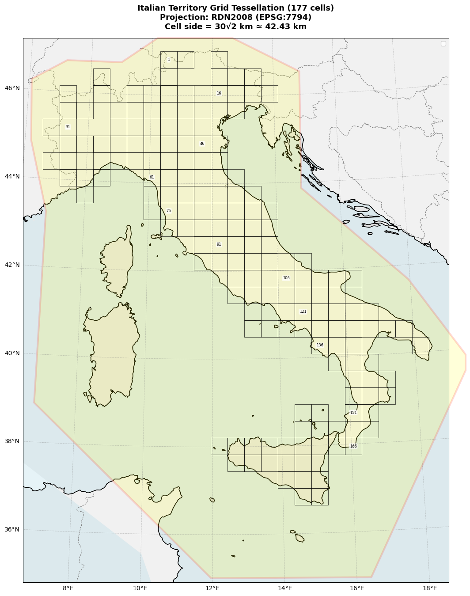
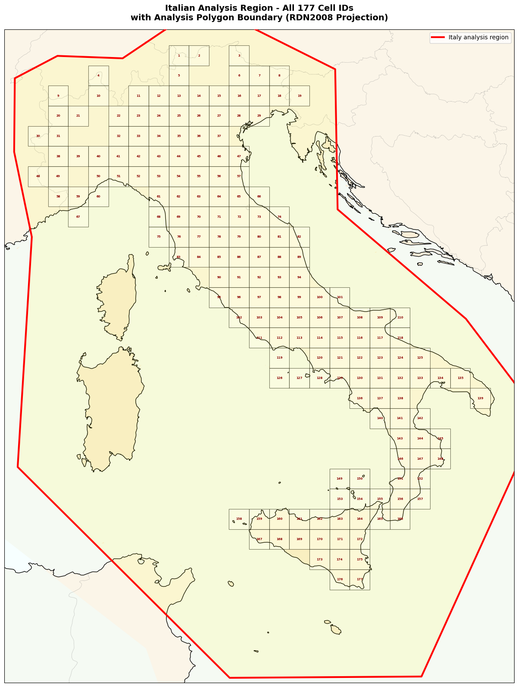
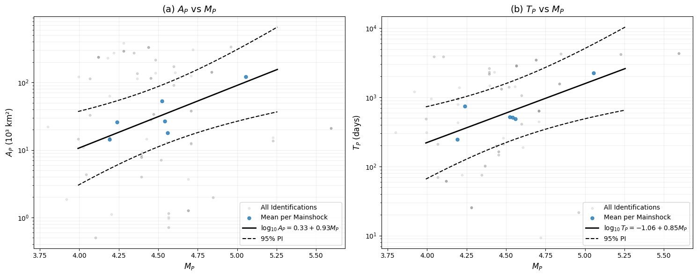
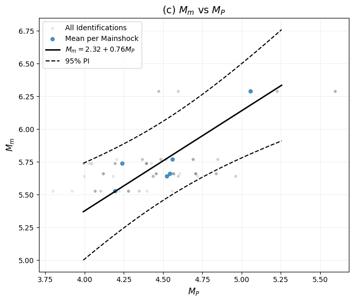

Examining the \(\Psi\) Phenomenon in Italian Seismicity#
📚 Background: What is \(\Psi\)?#
:math:`Psi` is a precursory seismic activation pattern observed before large earthquakes. It represents an increase in the rate of smaller earthquakes (precursors) in the vicinity of an upcoming mainshock.
Physical Interpretation#
Stress accumulation: As tectonic stress builds up before a large earthquake, it can trigger smaller earthquakes in the surrounding region
Statistical significance: Not all small earthquakes before a large one are precursors - Ψ analysis identifies statistically significant rate increases
EEPAS Foundation: The Ψ phenomenon is the core motivation for the EEPAS model
🎯 This Notebook’s Objectives#
This comprehensive notebook demonstrates the complete Ψ analysis workflow for Italian seismicity:
Part 1: Data Preparation#
Testing Region (R): 177 grid cells (CELLE_ter.mat) - where we evaluate forecasts
Neighborhood Region (N): CPTI15 polygon - larger region to avoid boundary effects
Catalog Filtering: Apply spatial, depth (≤40km), and temporal constraints
Part 2: Ψ Identification#
Select M≥5.45 mainshocks from 1990-2011 (training period)
Search for precursors in 400km radius before each mainshock
Optimize Ψ parameters (
a_p, b_p, t_p, r_p) using grid searchApply significance tests (slope ratio, goodness-of-fit)
Part 3: Scaling Relations Analysis#
Magnitude scaling: How does precursor magnitude relate to mainshock magnitude?
Time scaling: How does the Ψ duration relate to mainshock size?
Spatial scaling: How does the activation region size relate to mainshock?
🔗 Workflow Context#
This notebook is Step 0 (preprocessing) in the EEPAS pipeline:
[Step 0] Ψ Analysis (this notebook)
↓ Provides initial estimates for a_t, b_t
[Step 1] PPE Learning → a, d, s
[Step 2] Aftershock Fitting → ν, κ
[Step 3] EEPAS Learning → am, bm, Sm, at, bt, St, ba, Sa, u
[Step 4] Forecast Generation
[Step 5] Evaluation (PyCSEP)
⚠️ Important Notes#
Testing vs. Neighborhood Region:
Testing (R): 177 cells - compute NLL here, evaluate forecasts here
Neighborhood (N): CPTI15 polygon - larger region including R + buffer
Why? Avoid boundary effects - precursors outside R can still trigger events in R
Coordinate System:
Uses RDN2008 (EPSG:7794) projection
Units: kilometers (km)
Must convert between lat/lon and projected coordinates
Time Representation:
Uses decimal years (e.g., 2009.2604 = April 5, 2009)
Critical for Ψ analysis - need precise timing!
Let’s begin!
[1]:
!pip install pycsep -qq
━━━━━━━━━━━━━━━━━━━━━━━━━━━━━━━━━━━━━━━━ 24.3/24.3 MB 25.5 MB/s eta 0:00:00
Preparing metadata (setup.py) ... done
━━━━━━━━━━━━━━━━━━━━━━━━━━━━━━━━━━━━━━━━ 11.8/11.8 MB 99.9 MB/s eta 0:00:00
━━━━━━━━━━━━━━━━━━━━━━━━━━━━━━━━━━━━━━━━ 14.5/14.5 MB 65.2 MB/s eta 0:00:00
━━━━━━━━━━━━━━━━━━━━━━━━━━━━━━━━━━━━━━━━ 1.6/1.6 MB 59.7 MB/s eta 0:00:00
Building wheel for pycsep (setup.py) ... done
ERROR: pip's dependency resolver does not currently take into account all the packages that are installed. This behaviour is the source of the following dependency conflicts.
google-adk 1.20.0 requires sqlalchemy<3.0.0,>=2.0, but you have sqlalchemy 1.4.54 which is incompatible.
ipython-sql 0.5.0 requires sqlalchemy>=2.0, but you have sqlalchemy 1.4.54 which is incompatible.
[2]:
from google.colab import drive
drive.mount('/content/drive')
Mounted at /content/drive
[3]:
!cp /content/drive/MyDrive/00_Image\ meeting/Researches/01_Scratchpad/earthquake/EEPAS_CODE/HORUS_40ter.mat /content/
!cp /content/drive/MyDrive/00_Image\ meeting/Researches/01_Scratchpad/earthquake/HORUS_Ita_Catalog/HORUS_Ita_Catalog.txt /content/
!cp /content/drive/MyDrive/00_Image\ meeting/Researches/01_Scratchpad/earthquake/EEPAS_CODE/CELLE_ter.mat /content/
!cp /content/drive/MyDrive/00_Image\ meeting/Researches/01_Scratchpad/earthquake/EEPAS_CODE/CPTI15.mat /content/
!cp /content/drive/MyDrive/00_Image\ meeting/Researches/01_Scratchpad/earthquake/EEPAS-master/analysis/dataset.py /content/
!cp /content/drive/MyDrive/00_Image\ meeting/Researches/01_Scratchpad/earthquake/EEPAS-master/analysis/select_m5plus.py /content/
!cp /content/drive/MyDrive/00_Image\ meeting/Researches/01_Scratchpad/earthquake/EEPAS-master/analysis/decimal_time.py /content/
!cp /content/drive/MyDrive/00_Image\ meeting/Researches/01_Scratchpad/earthquake/EEPAS-master/analysis/optimize_psi_results.py /content/
!cp /content/drive/MyDrive/00_Image\ meeting/Researches/01_Scratchpad/earthquake/EEPAS-master/analysis/optimize_psi_working.py /content/
!cp /content/drive/MyDrive/00_Image\ meeting/Researches/01_Scratchpad/earthquake/EEPAS-master/analysis/plot_relations.py /content/
!cp /content/drive/MyDrive/00_Image\ meeting/Researches/01_Scratchpad/earthquake/EEPAS-master/utils/coordinate_transform.py /content/
[4]:
import os
import pandas as pd
import numpy as np
from tqdm import tqdm
import scipy
import scipy.io
from scipy.io import loadmat, savemat
from matplotlib.patches import Rectangle, Polygon
import matplotlib.dates as mdates
from matplotlib.path import Path
import subprocess
import matplotlib.font_manager as fm
import matplotlib.pyplot as plt
from matplotlib.gridspec import GridSpec
import cartopy.crs as ccrs
import cartopy.feature as cfeature
from pyproj import Transformer
from decimal_time import decimal_time_precise
from optimize_psi_working import optimize_psi, _load_catalog
from optimize_psi_results import optimize_psi_results
from select_m5plus import select_events_with_options
from plot_relations import analyze_scaling_relations
[5]:
mat_data = scipy.io.loadmat("/content/CELLE_ter.mat")
aa = mat_data['CELLESD']
aa.shape, aa[:2]
[5]:
((177, 10),
array([[6.86787804e+03, 6.91030445e+03, 5.15785699e+03, 5.20028340e+03,
1.00000000e+00, 2.69000000e+02, 6.88909124e+03, 5.17907019e+03,
1.00000000e+00, 4.12925132e-03],
[6.91030445e+03, 6.95273085e+03, 5.15785699e+03, 5.20028340e+03,
1.00000000e+00, 2.99000000e+02, 6.93151765e+03, 5.17907019e+03,
2.00000000e+00, 2.45036680e-03]]))
[6]:
np.savetxt('output.csv', aa[:,:4], delimiter=',')
[7]:
mat_data = scipy.io.loadmat("/content/CPTI15.mat")
mat_data['cpti15']
[7]:
array([[1.63980000e+01, 3.50500000e+01, 3.87196399e+03, 7.40126811e+03],
[1.19620000e+01, 3.50500000e+01, 3.86922477e+03, 6.99653642e+03],
[6.79600000e+00, 3.88930000e+01, 4.31304309e+03, 6.54906317e+03],
[6.80700000e+00, 4.32580000e+01, 4.79729044e+03, 6.57893081e+03],
[6.19400000e+00, 4.48420000e+01, 4.97633921e+03, 6.54164299e+03],
[6.06700000e+00, 4.62310000e+01, 5.13119466e+03, 6.54304825e+03],
[7.19400000e+00, 4.67090000e+01, 5.17834900e+03, 6.63307178e+03],
[8.99400000e+00, 4.67240000e+01, 5.17318387e+03, 6.77055195e+03],
[1.06860000e+01, 4.75450000e+01, 5.26077193e+03, 6.90123231e+03],
[1.19570000e+01, 4.75550000e+01, 5.26104730e+03, 6.99676847e+03],
[1.48610000e+01, 4.65210000e+01, 5.15024019e+03, 7.21919918e+03],
[1.47940000e+01, 4.38640000e+01, 4.85521402e+03, 7.22427410e+03],
[1.79530000e+01, 4.16670000e+01, 4.62486146e+03, 7.49513393e+03],
[1.96010000e+01, 3.97210000e+01, 4.41964146e+03, 7.65108514e+03],
[1.63980000e+01, 3.50500000e+01, 3.87196399e+03, 7.40126811e+03]])
Testing Region vs Neighborhood Region#
[8]:
italy_polygon = mat_data['cpti15']
# Extract polygon coordinates
polygon_lon = italy_polygon[:, 0] # Longitude
polygon_lat = italy_polygon[:, 1] # Latitude
polygon_x_km = italy_polygon[:, 3] # X coordinate (eastward, km)
polygon_y_km = italy_polygon[:, 2] # Y coordinate (northward, km)
polygon_x_m = polygon_x_km * 1000 # Convert to meters
polygon_y_m = polygon_y_km * 1000 # Convert to meters
print("="*60)
print("Italy Analysis Polygon Information")
print("="*60)
print(f"Polygon vertices: {len(italy_polygon)}")
print(f"Longitude range: {polygon_lon.min():.2f}°E to {polygon_lon.max():.2f}°E")
print(f"Latitude range: {polygon_lat.min():.2f}°N to {polygon_lat.max():.2f}°N")
print(f"X range: {polygon_x_km.min():.2f} to {polygon_x_km.max():.2f} km")
print(f"Y range: {polygon_y_km.min():.2f} to {polygon_y_km.max():.2f} km")
# Read CSV
df = pd.read_csv('output.csv', header=None)
# Convert unit: km → m
data_m = df.values * 1000
print(f"\n{'='*60}")
print("Grid Cell Information")
print("="*60)
print(f"Total number of cells: {len(data_m)}")
print(f"X range (m): {data_m[:, 0].min():.0f} to {data_m[:, 1].max():.0f}")
print(f"Y range (m): {data_m[:, 2].min():.0f} to {data_m[:, 3].max():.0f}")
# Create coordinate transformer: EPSG:7794 → EPSG:4326 (WGS84)
transformer = Transformer.from_crs("EPSG:7794", "EPSG:4326", always_xy=True)
# Convert coordinates and save
print("\nConverting coordinates to lat/lon...")
cells_lonlat = []
for i in tqdm(range(len(data_m)), desc="Processing cells"):
x_min, x_max, y_min, y_max = data_m[i]
# Convert four corners to lat/lon
lon_min, lat_min = transformer.transform(x_min, y_min)
lon_max, lat_max = transformer.transform(x_max, y_max)
cells_lonlat.append({
'cell_id': i + 1,
'x_min_m': x_min,
'x_max_m': x_max,
'y_min_m': y_min,
'y_max_m': y_max,
'lon_min': lon_min,
'lon_max': lon_max,
'lat_min': lat_min,
'lat_max': lat_max,
'lon_center': (lon_min + lon_max) / 2,
'lat_center': (lat_min + lat_max) / 2
})
cells_df = pd.DataFrame(cells_lonlat)
cells_df.to_csv('italy_cells_coordinates.csv', index=False)
print(f"✓ Coordinates saved to 'italy_cells_coordinates.csv'")
# Define RDN2008 projection (EPSG:7794)
rdn2008 = ccrs.epsg(7794)
# ============= Figure 1: Main map with selected labels and polygon =============
print("\n" + "="*60)
print("Creating Figure 1: Main map with selected labels and polygon...")
print("="*60)
fig = plt.figure(figsize=(50, 16))
ax = plt.axes(projection=rdn2008)
# Set extent (in meters)
x_min, x_max = data_m[:, 0].min() - 50000, data_m[:, 1].max() + 50000
y_min, y_max = data_m[:, 2].min() - 400000, data_m[:, 3].max() + 900000
ax.set_extent([x_min, x_max, y_min, y_max], crs=rdn2008)
# Add map features
print("Adding map features...")
ax.add_feature(cfeature.LAND, facecolor='lightgray', alpha=0.3, zorder=0)
ax.add_feature(cfeature.OCEAN, facecolor='lightblue', alpha=0.3, zorder=0)
ax.add_feature(cfeature.COASTLINE, linewidth=1.2, edgecolor='black', zorder=1)
ax.add_feature(cfeature.BORDERS, linewidth=0.8, linestyle='--', edgecolor='gray', zorder=1)
italy_poly = Polygon(list(zip(polygon_x_m, polygon_y_m)),
closed=True,
facecolor='yellow',
alpha=0.15,
edgecolor='red',
linewidth=3,
transform=rdn2008,
zorder=1.5,
clip_on=False)
ax.add_patch(italy_poly)
# Draw grid cells
print("Drawing grid cells...")
for i in tqdm(range(len(data_m)), desc="Drawing cells"):
x_min_cell, x_max_cell, y_min_cell, y_max_cell = data_m[i]
rect = Rectangle(
(x_min_cell, y_min_cell),
x_max_cell - x_min_cell,
y_max_cell - y_min_cell,
linewidth=0.6,
edgecolor='black',
facecolor='none',
alpha=0.8,
transform=rdn2008,
zorder=2
)
ax.add_patch(rect)
# Label every 15 cells
if i % 15 == 0:
x_center = (x_min_cell + x_max_cell) / 2
y_center = (y_min_cell + y_max_cell) / 2
ax.text(x_center, y_center, str(i + 1),
fontsize=6, ha='center', va='center',
transform=rdn2008,
bbox=dict(boxstyle='round,pad=0.2', facecolor='white',
alpha=0.7, edgecolor='none'),
zorder=3)
# Add gridlines
gl = ax.gridlines(draw_labels=True, linewidth=0.5, color='gray',
alpha=0.5, linestyle='--', crs=ccrs.PlateCarree())
gl.top_labels = False
gl.right_labels = False
# Add legend
ax.legend(loc='upper right', fontsize=10)
ax.set_title(f'Italian Territory Grid Tessellation ({len(data_m)} cells)\n'
f'Projection: RDN2008 (EPSG:7794)\n'
f'Cell side = 30√2 km ≈ 42.43 km',
fontsize=13, fontweight='bold', pad=15)
#plt.tight_layout()
print("Saving Figure 1...")
plt.savefig('italy_grid_with_polygon.png', dpi=300, bbox_inches='tight')
print("✓ Saved: italy_grid_with_polygon.png")
plt.show()
# ============= Figure 2: Map with all cell IDs and polygon =============
print("\n" + "="*60)
print("Creating Figure 2: Map with all cell IDs and polygon...")
print("="*60)
fig2 = plt.figure(figsize=(16, 16))
ax2 = plt.axes(projection=rdn2008)
ax2.set_extent([x_min, x_max, y_min, y_max], crs=rdn2008)
print("Adding map features...")
ax2.add_feature(cfeature.LAND, facecolor='wheat', alpha=0.3)
ax2.add_feature(cfeature.OCEAN, facecolor='azure', alpha=0.5)
ax2.add_feature(cfeature.COASTLINE, linewidth=1, edgecolor='black')
ax2.add_feature(cfeature.BORDERS, linewidth=0.6, linestyle=':', edgecolor='gray')
# Draw Italy polygon boundary
print("Drawing Italy polygon boundary...")
ax2.plot(polygon_x_m, polygon_y_m,
color='red', linewidth=3, linestyle='-',
transform=rdn2008, zorder=4, label='Italy analysis region')
ax2.fill(polygon_x_m, polygon_y_m,
color='yellow', alpha=0.1, transform=rdn2008, zorder=1.5)
# Draw all cells with numbers
print("Drawing all cells with labels...")
for i in tqdm(range(len(data_m)), desc="Drawing labeled cells"):
x_min_cell, x_max_cell, y_min_cell, y_max_cell = data_m[i]
# Cell border
rect = Rectangle(
(x_min_cell, y_min_cell),
x_max_cell - x_min_cell,
y_max_cell - y_min_cell,
linewidth=0.8,
edgecolor='black',
facecolor='white',
alpha=0.6,
transform=rdn2008
)
ax2.add_patch(rect)
# Label all cells (starting from 1)
x_center = (x_min_cell + x_max_cell) / 2
y_center = (y_min_cell + y_max_cell) / 2
ax2.text(x_center, y_center, str(i + 1),
fontsize=5, ha='center', va='center',
transform=rdn2008,
color='darkred', fontweight='bold')
# Add legend
ax2.legend(loc='upper right', fontsize=10)
ax2.set_title(f'Italian Analysis Region - All {len(data_m)} Cell IDs\n'
f'with Analysis Polygon Boundary (RDN2008 Projection)',
fontsize=14, fontweight='bold', pad=15)
plt.tight_layout()
print("Saving Figure 2...")
plt.savefig('italy_grid_all_numbers_with_polygon.png', dpi=300, bbox_inches='tight')
print("✓ Saved: italy_grid_all_numbers_with_polygon.png")
plt.show()
print("\n" + "="*60)
print("✓ All tasks completed!")
print("="*60)
print("\nGenerated files:")
print(" 1. italy_cells_coordinates.csv - Cell coordinates (lat/lon + projected)")
print(" 2. italy_grid_with_polygon.png - Main map with polygon boundary")
print(" 3. italy_grid_all_numbers_with_polygon.png - All cell IDs with polygon")
print(f"\nCell ID range: 1 to {len(data_m)}")
print(f"Polygon vertices: {len(italy_polygon)}")
============================================================
Italy Analysis Polygon Information
============================================================
Polygon vertices: 15
Longitude range: 6.07°E to 19.60°E
Latitude range: 35.05°N to 47.55°N
X range: 6541.64 to 7651.09 km
Y range: 3869.22 to 5261.05 km
============================================================
Grid Cell Information
============================================================
Total number of cells: 177
X range (m): 6570893 to 7546701
Y range (m): 4054770 to 5200283
Converting coordinates to lat/lon...
Processing cells: 100%|██████████| 177/177 [00:00<00:00, 82451.33it/s]
✓ Coordinates saved to 'italy_cells_coordinates.csv'
============================================================
Creating Figure 1: Main map with selected labels and polygon...
============================================================
Adding map features...
Drawing grid cells...
Drawing cells: 100%|██████████| 177/177 [00:00<00:00, 1422.82it/s]
/tmp/ipython-input-3694189746.py:135: UserWarning: No artists with labels found to put in legend. Note that artists whose label start with an underscore are ignored when legend() is called with no argument.
ax.legend(loc='upper right', fontsize=10)
Saving Figure 1...
/usr/local/lib/python3.12/dist-packages/cartopy/io/__init__.py:242: DownloadWarning: Downloading: https://naturalearth.s3.amazonaws.com/10m_physical/ne_10m_land.zip
warnings.warn(f'Downloading: {url}', DownloadWarning)
/usr/local/lib/python3.12/dist-packages/cartopy/io/__init__.py:242: DownloadWarning: Downloading: https://naturalearth.s3.amazonaws.com/10m_physical/ne_10m_ocean.zip
warnings.warn(f'Downloading: {url}', DownloadWarning)
/usr/local/lib/python3.12/dist-packages/cartopy/io/__init__.py:242: DownloadWarning: Downloading: https://naturalearth.s3.amazonaws.com/10m_physical/ne_10m_coastline.zip
warnings.warn(f'Downloading: {url}', DownloadWarning)
/usr/local/lib/python3.12/dist-packages/cartopy/io/__init__.py:242: DownloadWarning: Downloading: https://naturalearth.s3.amazonaws.com/10m_cultural/ne_10m_admin_0_boundary_lines_land.zip
warnings.warn(f'Downloading: {url}', DownloadWarning)
✓ Saved: italy_grid_with_polygon.png

============================================================
Creating Figure 2: Map with all cell IDs and polygon...
============================================================
Adding map features...
Drawing Italy polygon boundary...
Drawing all cells with labels...
Drawing labeled cells: 100%|██████████| 177/177 [00:00<00:00, 719.94it/s]
Saving Figure 2...
✓ Saved: italy_grid_all_numbers_with_polygon.png

============================================================
✓ All tasks completed!
============================================================
Generated files:
1. italy_cells_coordinates.csv - Cell coordinates (lat/lon + projected)
2. italy_grid_with_polygon.png - Main map with polygon boundary
3. italy_grid_all_numbers_with_polygon.png - All cell IDs with polygon
Cell ID range: 1 to 177
Polygon vertices: 15
Transform coordinates#
[9]:
# 1. Define column names
# Note: Here we assume the 10th column of 'HORUS_Ita_Catalog_o.txt' is ML
columns = [
"Year", "Month", "Day", "Hour", "Minute", "Second",
"Latitude", "Longitude", "Depth", "Magnitude", # <-- Assuming the 10th column is Mw
"sigMw", "Geo-Ita", "Geo-CPTI15", "Ev. type", "Iside n."
]
# 2. Read the tab-separated .txt file
# Please replace 'HORUS_Ita_Catalog_o.txt' with your actual file path
# We skip the first header line (header=0, then skiprows=[0])
try:
df = pd.read_csv(
'HORUS_Ita_Catalog.txt',
delim_whitespace=True, # Use whitespace (including tab) as a delimiter
names=columns,
comment='#', # Assume comments start with # (if any)
skiprows=1 # Skip the original header line
)
# 3. Select the 10 fields required for your target format
target_columns = ['Year', 'Month', 'Day', 'Hour', 'Minute', 'Second', 'Latitude', 'Longitude', 'Depth', 'Magnitude']
df_target = df[target_columns]
# 4. Convert the data to a NumPy array (often required for MATLAB format)
# and create a dictionary
mat_data = {
'HORUS': df_target.to_numpy()
# You can also pass the DataFrame directly, but converting to an array is closer to a MATLAB matrix
# mat_data_df = {'catalog_data': df_target}
}
# 5. Save as a .mat file
savemat("HORUS.mat", mat_data)
print("File 'HORUS.mat' saved successfully!")
print("\nFirst 5 records of the data:")
print(df_target.head())
except FileNotFoundError:
print("Error: 'HORUS_Ita_Catalog.txt' file not found.")
except Exception as e:
print(f"An error occurred during processing: {e}")
/tmp/ipython-input-863598739.py:13: FutureWarning: The 'delim_whitespace' keyword in pd.read_csv is deprecated and will be removed in a future version. Use ``sep='\s+'`` instead
df = pd.read_csv(
File 'HORUS.mat' saved successfully!
First 5 records of the data:
Year Month Day Hour Minute Second Latitude Longitude Depth \
0 1960.0 1.0 3.0 20.0 19.0 34.0 39.3000 15.3000 290.0
1 1960.0 1.0 4.0 9.0 20.0 0.0 43.1333 13.1667 0.0
2 1960.0 1.0 6.0 15.0 17.0 34.0 46.4833 12.7000 4.0
3 1960.0 1.0 6.0 15.0 20.0 53.0 46.4667 12.7000 0.0
4 1960.0 1.0 6.0 15.0 31.0 0.0 46.4333 12.7500 0.0
Magnitude
0 6.34
1 3.94
2 4.69
3 4.14
4 3.00
/tmp/ipython-input-863598739.py:13: DtypeWarning: Columns (13) have mixed types. Specify dtype option on import or set low_memory=False.
df = pd.read_csv(
[10]:
df_target
[10]:
| Year | Month | Day | Hour | Minute | Second | Latitude | Longitude | Depth | Magnitude | |
|---|---|---|---|---|---|---|---|---|---|---|
| 0 | 1960.0 | 1.0 | 3.0 | 20.0 | 19.0 | 34.00 | 39.3000 | 15.3000 | 290.0 | 6.34 |
| 1 | 1960.0 | 1.0 | 4.0 | 9.0 | 20.0 | 0.00 | 43.1333 | 13.1667 | 0.0 | 3.94 |
| 2 | 1960.0 | 1.0 | 6.0 | 15.0 | 17.0 | 34.00 | 46.4833 | 12.7000 | 4.0 | 4.69 |
| 3 | 1960.0 | 1.0 | 6.0 | 15.0 | 20.0 | 53.00 | 46.4667 | 12.7000 | 0.0 | 4.14 |
| 4 | 1960.0 | 1.0 | 6.0 | 15.0 | 31.0 | 0.00 | 46.4333 | 12.7500 | 0.0 | 3.00 |
| ... | ... | ... | ... | ... | ... | ... | ... | ... | ... | ... |
| 493413 | 2024.0 | 6.0 | 23.0 | 4.0 | 45.0 | 40.63 | 42.8875 | 12.8883 | 11.9 | 0.66 |
| 493414 | 2024.0 | 6.0 | 23.0 | 4.0 | 51.0 | 14.70 | 46.1982 | 12.4182 | 9.3 | 1.29 |
| 493415 | 2024.0 | 6.0 | 23.0 | 6.0 | 26.0 | 39.32 | 38.0970 | 15.0805 | 9.5 | 1.74 |
| 493416 | 2024.0 | 6.0 | 23.0 | 7.0 | 7.0 | 42.56 | 46.1515 | 10.4637 | 8.7 | 1.49 |
| 493417 | 2024.0 | 6.0 | 23.0 | 7.0 | 51.0 | 56.07 | 42.9032 | 12.9262 | 11.0 | 1.57 |
493418 rows × 10 columns
[11]:
!python coordinate_transform.py \
--horus-in HORUS.mat \
--celle-in CELLE_ter.mat \
--horus-out HORUS_Italy_RDN2008.mat \
--celle-out CELLE_Italy_RDN2008.mat
============================================================
Coordinate Transformation Tool
============================================================
Target Coordinate System: RDN2008 Italy Zone (epsg:7794)
Description: Italy national projected coordinate system
Region: RDN2008 Italy Zone
============================================================
✓ Coordinate transformer created: epsg:4326 -> epsg:7794
Processing HORUS file: HORUS.mat
Original data shape: (493418, 10)
Coordinate range:
Latitude: [34.12, 48.80]°N
Longitude: [5.11, 20.00]°E
⚠️ Warning: 498 coordinates out of bounds for RDN2008 Italy Zone, transformation may be inaccurate
Invalid range: lat [34.12, 48.80]°N, lon [5.11, 19.30]°E
Expected range: lat [35, 48]°N, lon [6, 20]°E
Transformed coordinate range (km):
Easting (X): [6386.26, 7713.82] km
Northing (Y): [3775.51, 5408.56] km
✓ Data written to HORUS_Italy_RDN2008.mat
Variable name `HORUS` preserved, original lat/lon replaced with projected coordinates (km)
Processing CELLE file: CELLE_ter.mat
❌ Error processing CELLE file: 'Variable `CELLE` not found in CELLE_ter.mat'
============================================================
✓ Coordinate transformation completed!
============================================================
Obtain data in the testing region.
[12]:
# ============= 1. Reading Grid Cell Definitions =============
print("="*60)
print("Reading grid cell definitions...")
print("="*60)
cells_df = pd.read_csv('output.csv', header=None)
cells_df.columns = ['x_min_km', 'x_max_km', 'y_min_km', 'y_max_km']
cells_df['cell_id'] = range(1, len(cells_df) + 1)
print(f"Total grid cells: {len(cells_df)}")
print(f"X range: [{cells_df['x_min_km'].min():.2f}, {cells_df['x_max_km'].max():.2f}] km")
print(f"Y range: [{cells_df['y_min_km'].min():.2f}, {cells_df['y_max_km'].max():.2f}] km")
# ============= 2. Reading Earthquake Catalog A (Used for Filtering) =============
print("\n" + "="*60)
print("Reading earthquake catalog A...")
print("="*60)
mat_data_A = scipy.io.loadmat("/content/HORUS_Italy_RDN2008.mat")
var_name = "HORUS"
catalog_data_A = mat_data_A[var_name]
# First 10 columns
columns_A = ['Year', 'Month', 'Day', 'Hour', 'Minute', 'Second',
'Latitude', 'Longitude', 'Depth', 'Magnitude']
df_catalog_A = pd.DataFrame(catalog_data_A[:, :10], columns=columns_A)
# Create datetime column
df_catalog_A['datetime'] = pd.to_datetime(
df_catalog_A[['Year', 'Month', 'Day', 'Hour', 'Minute', 'Second']].astype(int),
errors='coerce'
)
df_catalog_A.dropna(subset=['datetime'], inplace=True)
print(f"Total earthquakes in catalog A: {len(df_catalog_A)}")
print(f"Longitude (x) range: [{df_catalog_A['Longitude'].min():.2f}, {df_catalog_A['Longitude'].max():.2f}] km")
print(f"Latitude (y) range: [{df_catalog_A['Latitude'].min():.2f}, {df_catalog_A['Latitude'].max():.2f}] km")
print(f"Magnitude range: [{df_catalog_A['Magnitude'].min():.2f}, {df_catalog_A['Magnitude'].max():.2f}]")
print(f"Depth range: [{df_catalog_A['Depth'].min():.2f}, {df_catalog_A['Depth'].max():.2f}] km")
print(f"Year range: [{df_catalog_A['Year'].min():.0f}, {df_catalog_A['Year'].max():.0f}]")
# ============= 3. Reading Earthquake Catalog B (Full Data) =============
print("\n" + "="*60)
print("Reading earthquake catalog B...")
print("="*60)
mat_data_B = scipy.io.loadmat("/content/HORUS.mat")
catalog_data_B = mat_data_B[var_name]
print(f"Total earthquakes in catalog B: {catalog_data_B.shape[0]}")
print(f"Number of columns in B: {catalog_data_B.shape[1]}")
# Check if the number of records in A and B are consistent
if catalog_data_A.shape[0] != catalog_data_B.shape[0]:
print(f"⚠ Warning: A has {catalog_data_A.shape[0]} rows, B has {catalog_data_B.shape[0]} rows")
else:
print(f"✓ A and B have the same number of rows: {catalog_data_A.shape[0]}")
# ============= 4. Vectorized Filtering (Using A's Coordinates) =============
print("\n" + "="*60)
print("Filtering earthquakes within grid cells (vectorized)...")
print("="*60)
# Use A's coordinates for filtering
eq_y = df_catalog_A['Latitude'].values # y coordinate
eq_x = df_catalog_A['Longitude'].values # x coordinate
# Extract grid boundaries
cell_x_min = cells_df['x_min_km'].values
cell_x_max = cells_df['x_max_km'].values
cell_y_min = cells_df['y_min_km'].values
cell_y_max = cells_df['y_max_km'].values
# Vectorized computation
print("Computing spatial containment matrix...")
in_x = (eq_x[:, None] >= cell_x_min[None, :]) & (eq_x[:, None] <= cell_x_max[None, :])
in_y = (eq_y[:, None] >= cell_y_min[None, :]) & (eq_y[:, None] <= cell_y_max[None, :])
in_cell = in_x & in_y
print("Finding cell IDs for each earthquake...")
cell_ids = np.where(in_cell.any(axis=1),
in_cell.argmax(axis=1) + 1,
-1)
df_catalog_A['cell_id'] = cell_ids
# Get indices inside the grid (spatial filter)
spatial_mask = cell_ids > 0
print(f"\n{'='*60}")
print(f"✓ Spatial filtering completed!")
print(f"{'='*60}")
print(f"Total earthquakes: {len(df_catalog_A)}")
print(f"Earthquakes within grid cells: {spatial_mask.sum()}")
print(f"Earthquakes outside grid cells: {(~spatial_mask).sum()}")
print(f"Percentage within cells: {spatial_mask.sum()/len(df_catalog_A)*100:.2f}%")
# ============= 5. Adding Depth and Time Filters =============
print("\n" + "="*60)
print("Applying depth and time filters...")
print("="*60)
# Depth filter: Depth ≤ 40 km
depth_mask = df_catalog_A['Depth'] <= 40.0
print(f"Earthquakes with depth ≤ 40 km: {depth_mask.sum()} ({depth_mask.sum()/len(df_catalog_A)*100:.2f}%)")
# Time filter: Year <= 2021
time_mask = df_catalog_A['Year'] <= 2021
print(f"Earthquakes ≤ 2021: {time_mask.sum()} ({time_mask.sum()/len(df_catalog_A)*100:.2f}%)")
# Combine all filter conditions
combined_mask = spatial_mask & depth_mask & time_mask
combined_indices = np.where(combined_mask)[0]
print(f"\n{'='*60}")
print(f"✓ All filters applied!")
print(f"{'='*60}")
print(f"Total earthquakes: {len(df_catalog_A)}")
print(f"After spatial filter: {spatial_mask.sum()}")
print(f"After depth filter (≤40km): {(spatial_mask & depth_mask).sum()}")
print(f"After time filter (≤2021): {combined_mask.sum()}")
print(f"Final percentage: {combined_mask.sum()/len(df_catalog_A)*100:.2f}%")
# ============= 6. Filtering A and B using Combined Criteria =============
print(f"\n{'='*60}")
print("Filtering both A and B using combined criteria...")
print(f"{'='*60}")
# Filter A
df_A_filtered = df_catalog_A[combined_mask].copy()
print(f"✓ Filtered A: {len(df_A_filtered)} earthquakes")
# Filter B (using the same indices)
catalog_B_filtered = catalog_data_B[combined_indices, :]
print(f"✓ Filtered B: {catalog_B_filtered.shape[0]} earthquakes, {catalog_B_filtered.shape[1]} columns")
# ============= 7. Statistics =============
print(f"\n{'='*60}")
print("Statistics of filtered earthquakes:")
print(f"{'='*60}")
print(f"Magnitude range: [{df_A_filtered['Magnitude'].min():.2f}, {df_A_filtered['Magnitude'].max():.2f}]")
print(f"Depth range: [{df_A_filtered['Depth'].min():.2f}, {df_A_filtered['Depth'].max():.2f}] km")
print(f"Year range: [{df_A_filtered['Year'].min():.0f}, {df_A_filtered['Year'].max():.0f}]")
print(f"Time range: {df_A_filtered['datetime'].min()} to {df_A_filtered['datetime'].max()}")
# Statistics of earthquake count per cell
cell_counts = df_A_filtered['cell_id'].value_counts().sort_index()
print(f"\nNumber of cells with earthquakes: {len(cell_counts)}")
print(f"Earthquakes per cell - mean: {cell_counts.mean():.1f}, median: {cell_counts.median():.1f}")
print(f"Max earthquakes in a single cell: {cell_counts.max()}")
# Display the top 10 cells with the most earthquakes
print("\nTop 10 cells with most earthquakes:")
print(cell_counts.head(10))
# ============= 8. Saving Results =============
print(f"\n{'='*60}")
print("Saving results...")
print(f"{'='*60}")
# Save A (CSV) - without cell_id
output_A_columns = ['Year', 'Month', 'Day', 'Hour', 'Minute', 'Second',
'Latitude', 'Longitude', 'Depth', 'Magnitude']
df_A_filtered[output_A_columns].to_csv('HORUS_Italy_filtered.csv', index=False)
print("✓ Saved: HORUS_Italy_filtered.csv (without cell_id)")
# Save A (MAT) - without cell_id
output_A_array = df_A_filtered[output_A_columns].to_numpy()
mat_output_A = {
'HORUS': output_A_array,
'column_names': output_A_columns
}
scipy.io.savemat('HORUS_Italy_RDN2008_filtered.mat', mat_output_A)
print("✓ Saved: HORUS_Italy_RDN2008_filtered.mat (without cell_id)")
# Save B (MAT) - without adding cell_id
mat_output_B = {
'HORUS': catalog_B_filtered
}
scipy.io.savemat('HORUS_Italy_filtered.mat', mat_output_B)
print("✓ Saved: HORUS_Italy_filtered.mat (without cell_id)")
print(f" B columns: {catalog_data_B.shape[1]} (all original columns)")
# Save B (CSV) - if the number of columns is not too large
if catalog_B_filtered.shape[1] <= 20:
b_columns = [f'col_{i}' for i in range(catalog_B_filtered.shape[1])]
b_columns[0] = 'Year'
b_columns[6] = 'Latitude'
b_columns[7] = 'Longitude'
b_columns[8] = 'Depth'
df_B_filtered = pd.DataFrame(catalog_B_filtered, columns=b_columns)
df_B_filtered.to_csv('HORUS_Italy_filtered_full.csv', index=False)
print("✓ Saved: HORUS_Italy_filtered_full.csv")
else:
print(f"⚠ B has {catalog_B_filtered.shape[1]} columns, skipping CSV export (too many columns)")
# Save cell statistics (Important!)
cell_stats = pd.DataFrame({
'cell_id': cell_counts.index,
'earthquake_count': cell_counts.values
})
cell_stats = cell_stats.merge(
cells_df[['cell_id', 'x_min_km', 'x_max_km', 'y_min_km', 'y_max_km']],
on='cell_id',
how='left'
)
cell_stats.to_csv('cell_earthquake_counts.csv', index=False)
print("✓ Saved: cell_earthquake_counts.csv")
print(f"\n{'='*60}")
print("✓ All tasks completed!")
print(f"{'='*60}")
print("\nFilter criteria applied:")
print(" 1. Spatial: Within 177 grid cells")
print(" 2. Depth: ≤ 40 km")
print(" 3. Time: ≤ 2021")
print("\nGenerated files:")
print(" 1. HORUS_Italy_filtered.csv - Filtered catalog (10 columns, no cell_id)")
print(" 2. HORUS_Italy_RDN2008_filtered.mat - Filtered catalog (MAT, no cell_id)")
print(" 3. HORUS_Italy_filtered.mat - Full filtered catalog (MAT, no cell_id)")
if catalog_B_filtered.shape[1] <= 20:
print(" 4. HORUS_Italy_filtered_full.csv - Full filtered catalog (CSV)")
print(f" {4 if catalog_B_filtered.shape[1] <= 20 else 3}. cell_earthquake_counts.csv - Statistics per cell")
# ============= 9. Display Preview =============
print(f"\n{'='*60}")
print("Preview of filtered data (without cell_id):")
print(f"{'='*60}")
print(df_A_filtered[output_A_columns].head(10))
print(f"\n{'='*60}")
print("Filtering summary by criteria:")
print(f"{'='*60}")
print(f"Original total: {len(df_catalog_A)}")
print(f"After spatial filter: {spatial_mask.sum()} (-{len(df_catalog_A) - spatial_mask.sum()})")
print(f"After depth filter: {(spatial_mask & depth_mask).sum()} (-{spatial_mask.sum() - (spatial_mask & depth_mask).sum()})")
print(f"After time filter: {combined_mask.sum()} (-{(spatial_mask & depth_mask).sum() - combined_mask.sum()})")
print(f"Final retained: {combined_mask.sum()} ({combined_mask.sum()/len(df_catalog_A)*100:.2f}%)")
============================================================
Reading grid cell definitions...
============================================================
Total grid cells: 177
X range: [6570.89, 7546.70] km
Y range: [4054.77, 5200.28] km
============================================================
Reading earthquake catalog A...
============================================================
Total earthquakes in catalog A: 493418
Longitude (x) range: [6386.26, 7713.82] km
Latitude (y) range: [3775.51, 5408.56] km
Magnitude range: [-1.13, 6.81]
Depth range: [-0.20, 630.80] km
Year range: [1960, 2024]
============================================================
Reading earthquake catalog B...
============================================================
Total earthquakes in catalog B: 493418
Number of columns in B: 10
✓ A and B have the same number of rows: 493418
============================================================
Filtering earthquakes within grid cells (vectorized)...
============================================================
Computing spatial containment matrix...
Finding cell IDs for each earthquake...
============================================================
✓ Spatial filtering completed!
============================================================
Total earthquakes: 493418
Earthquakes within grid cells: 464318
Earthquakes outside grid cells: 29100
Percentage within cells: 94.10%
============================================================
Applying depth and time filters...
============================================================
Earthquakes with depth ≤ 40 km: 483478 (97.99%)
Earthquakes ≤ 2021: 450431 (91.29%)
============================================================
✓ All filters applied!
============================================================
Total earthquakes: 493418
After spatial filter: 464318
After depth filter (≤40km): 457646
After time filter (≤2021): 418257
Final percentage: 84.77%
============================================================
Filtering both A and B using combined criteria...
============================================================
✓ Filtered A: 418257 earthquakes
✓ Filtered B: 418257 earthquakes, 10 columns
============================================================
Statistics of filtered earthquakes:
============================================================
Magnitude range: [-1.13, 6.81]
Depth range: [-0.20, 40.00] km
Year range: [1960, 2021]
Time range: 1960-01-04 09:20:00 to 2021-12-31 23:37:19
Number of cells with earthquakes: 177
Earthquakes per cell - mean: 2363.0, median: 496.0
Max earthquakes in a single cell: 79696
Top 10 cells with most earthquakes:
cell_id
1 312
2 112
3 44
4 99
5 687
6 179
7 2459
8 5291
9 675
10 77
Name: count, dtype: int64
============================================================
Saving results...
============================================================
✓ Saved: HORUS_Italy_filtered.csv (without cell_id)
✓ Saved: HORUS_Italy_RDN2008_filtered.mat (without cell_id)
✓ Saved: HORUS_Italy_filtered.mat (without cell_id)
B columns: 10 (all original columns)
✓ Saved: HORUS_Italy_filtered_full.csv
✓ Saved: cell_earthquake_counts.csv
============================================================
✓ All tasks completed!
============================================================
Filter criteria applied:
1. Spatial: Within 177 grid cells
2. Depth: ≤ 40 km
3. Time: ≤ 2021
Generated files:
1. HORUS_Italy_filtered.csv - Filtered catalog (10 columns, no cell_id)
2. HORUS_Italy_RDN2008_filtered.mat - Filtered catalog (MAT, no cell_id)
3. HORUS_Italy_filtered.mat - Full filtered catalog (MAT, no cell_id)
4. HORUS_Italy_filtered_full.csv - Full filtered catalog (CSV)
4. cell_earthquake_counts.csv - Statistics per cell
============================================================
Preview of filtered data (without cell_id):
============================================================
Year Month Day Hour Minute Second Latitude Longitude Depth \
1 1960.0 1.0 4.0 9.0 20.0 0.0 4771.022277 7094.785982 0.0
2 1960.0 1.0 6.0 15.0 17.0 34.0 5142.320681 7053.669572 4.0
3 1960.0 1.0 6.0 15.0 20.0 53.0 5140.478190 7053.685894 0.0
4 1960.0 1.0 6.0 15.0 31.0 0.0 5136.806207 7057.555763 0.0
5 1960.0 1.0 6.0 15.0 45.0 0.0 5136.806207 7057.555763 0.0
6 1960.0 1.0 6.0 18.0 29.0 0.0 5142.229703 7042.168970 0.0
7 1960.0 1.0 6.0 20.0 0.0 0.0 5136.806207 7057.555763 0.0
8 1960.0 1.0 6.0 22.0 20.0 0.0 5140.478190 7053.685894 0.0
9 1960.0 1.0 7.0 1.0 41.0 20.0 5140.478190 7053.685894 0.0
10 1960.0 1.0 7.0 1.0 42.0 22.0 5127.503317 7051.241153 0.0
Magnitude
1 3.94
2 4.69
3 4.14
4 3.00
5 3.00
6 3.00
7 3.00
8 2.70
9 3.80
10 3.80
============================================================
Filtering summary by criteria:
============================================================
Original total: 493418
After spatial filter: 464318 (-29100)
After depth filter: 457646 (-6672)
After time filter: 418257 (-39389)
Final retained: 418257 (84.77%)
Obtain data in neighborhood region
[13]:
# ============= 1. Reading Polygon Definition =============
print("="*60)
print("Reading polygon definition...")
print("="*60)
# Read the polygon for the Italy analysis region
mat_data = scipy.io.loadmat("/content/CPTI15.mat")
italy_polygon = mat_data['cpti15']
# Extract polygon coordinates (using km units)
polygon_x_km = italy_polygon[:, 3] # X coordinate (eastward)
polygon_y_km = italy_polygon[:, 2] # Y coordinate (northward)
# Create a matplotlib Path object to check if a point is inside the polygon
polygon_points = np.column_stack([polygon_x_km, polygon_y_km])
polygon_path = Path(polygon_points)
print(f"Polygon vertices: {len(italy_polygon)}")
print(f"X range: [{polygon_x_km.min():.2f}, {polygon_x_km.max():.2f}] km")
print(f"Y range: [{polygon_y_km.min():.2f}, {polygon_y_km.max():.2f}] km")
# ============= 2. Reading Grid Cell Definitions (For Statistics) =============
print("\n" + "="*60)
print("Reading grid cell definitions...")
print("="*60)
cells_df = pd.read_csv('output.csv', header=None)
cells_df.columns = ['x_min_km', 'x_max_km', 'y_min_km', 'y_max_km']
cells_df['cell_id'] = range(1, len(cells_df) + 1)
print(f"Total grid cells: {len(cells_df)}")
print(f"X range: [{cells_df['x_min_km'].min():.2f}, {cells_df['x_max_km'].max():.2f}] km")
print(f"Y range: [{cells_df['y_min_km'].min():.2f}, {cells_df['y_max_km'].max():.2f}] km")
# ============= 3. Reading Earthquake Catalog A (Used for Filtering) =============
print("\n" + "="*60)
print("Reading earthquake catalog A...")
print("="*60)
mat_data_A = scipy.io.loadmat("/content/HORUS_Italy_RDN2008.mat")
var_name = "HORUS"
catalog_data_A = mat_data_A[var_name]
# First 10 columns
columns_A = ['Year', 'Month', 'Day', 'Hour', 'Minute', 'Second',
'Latitude', 'Longitude', 'Depth', 'Magnitude']
df_catalog_A = pd.DataFrame(catalog_data_A[:, :10], columns=columns_A)
# Create datetime column
df_catalog_A['datetime'] = pd.to_datetime(
df_catalog_A[['Year', 'Month', 'Day', 'Hour', 'Minute', 'Second']].astype(int),
errors='coerce'
)
df_catalog_A.dropna(subset=['datetime'], inplace=True)
print(f"Total earthquakes in catalog A: {len(df_catalog_A)}")
print(f"Longitude (x) range: [{df_catalog_A['Longitude'].min():.2f}, {df_catalog_A['Longitude'].max():.2f}] km")
print(f"Latitude (y) range: [{df_catalog_A['Latitude'].min():.2f}, {df_catalog_A['Latitude'].max():.2f}] km")
print(f"Magnitude range: [{df_catalog_A['Magnitude'].min():.2f}, {df_catalog_A['Magnitude'].max():.2f}]")
print(f"Depth range: [{df_catalog_A['Depth'].min():.2f}, {df_catalog_A['Depth'].max():.2f}] km")
print(f"Year range: [{df_catalog_A['Year'].min():.0f}, {df_catalog_A['Year'].max():.0f}]")
# ============= 4. Reading Earthquake Catalog B (Full Data) =============
print("\n" + "="*60)
print("Reading earthquake catalog B...")
print("="*60)
mat_data_B = scipy.io.loadmat("/content/HORUS.mat")
catalog_data_B = mat_data_B[var_name]
print(f"Total earthquakes in catalog B: {catalog_data_B.shape[0]}")
print(f"Number of columns in B: {catalog_data_B.shape[1]}")
# Check if the number of records in A and B are consistent
if catalog_data_A.shape[0] != catalog_data_B.shape[0]:
print(f"⚠ Warning: A has {catalog_data_A.shape[0]} rows, B has {catalog_data_B.shape[0]} rows")
else:
print(f"✓ A and B have the same number of rows: {catalog_data_A.shape[0]}")
# ============= 5. Spatial Filtering (Using Polygon) =============
print("\n" + "="*60)
print("Filtering earthquakes within polygon (vectorized)...")
print("="*60)
# Extract earthquake coordinates (km)
eq_x = df_catalog_A['Longitude'].values # x coordinate
eq_y = df_catalog_A['Latitude'].values # y coordinate
eq_points = np.column_stack([eq_x, eq_y])
# Use matplotlib Path to check if points are inside the polygon (very fast!)
print("Checking if earthquakes are within polygon...")
spatial_mask = polygon_path.contains_points(eq_points)
print(f"\n{'='*60}")
print(f"✓ Spatial filtering (polygon) completed!")
print(f"{'='*60}")
print(f"Total earthquakes: {len(df_catalog_A)}")
print(f"Earthquakes within polygon: {spatial_mask.sum()}")
print(f"Earthquakes outside polygon: {(~spatial_mask).sum()}")
print(f"Percentage within polygon: {spatial_mask.sum()/len(df_catalog_A)*100:.2f}%")
# ============= 6. Assigning Cell IDs to Earthquakes (For Statistics Only) =============
print("\n" + "="*60)
print("Assigning cell IDs to earthquakes (for statistics only)...")
print("="*60)
# Extract cell boundaries
cell_x_min = cells_df['x_min_km'].values
cell_x_max = cells_df['x_max_km'].values
cell_y_min = cells_df['y_min_km'].values
cell_y_max = cells_df['y_max_km'].values
# Vectorized computation (finding which cell each earthquake is inside)
print("Computing cell assignments...")
in_x = (eq_x[:, None] >= cell_x_min[None, :]) & (eq_x[:, None] <= cell_x_max[None, :])
in_y = (eq_y[:, None] >= cell_y_min[None, :]) & (eq_y[:, None] <= cell_y_max[None, :])
in_cell = in_x & in_y
cell_ids = np.where(in_cell.any(axis=1),
in_cell.argmax(axis=1) + 1,
-1) # -1 indicates not inside any cell
df_catalog_A['cell_id'] = cell_ids
# Count earthquakes inside the polygon but outside any cell
in_polygon_not_in_cell = spatial_mask & (cell_ids == -1)
print(f"Earthquakes in polygon but not in any cell: {in_polygon_not_in_cell.sum()}")
# ============= 7. Adding Depth and Time Filters =============
print("\n" + "="*60)
print("Applying depth and time filters...")
print("="*60)
# Depth filter: Depth ≤ 40 km
depth_mask = df_catalog_A['Depth'] <= 40.0
print(f"Earthquakes with depth ≤ 40 km: {depth_mask.sum()} ({depth_mask.sum()/len(df_catalog_A)*100:.2f}%)")
# Time filter: Year <= 2021
time_mask = df_catalog_A['Year'] <= 2021
print(f"Earthquakes ≤ 2021: {time_mask.sum()} ({time_mask.sum()/len(df_catalog_A)*100:.2f}%)")
# Combine all filter conditions
combined_mask = spatial_mask & depth_mask & time_mask
combined_indices = np.where(combined_mask)[0]
print(f"\n{'='*60}")
print(f"✓ All filters applied!")
print(f"{'='*60}")
print(f"Total earthquakes: {len(df_catalog_A)}")
print(f"After spatial filter (polygon): {spatial_mask.sum()}")
print(f"After depth filter (≤40km): {(spatial_mask & depth_mask).sum()}")
print(f"After time filter (≤2021): {combined_mask.sum()}")
print(f"Final percentage: {combined_mask.sum()/len(df_catalog_A)*100:.2f}%")
# ============= 8. Filtering A and B using Combined Criteria =============
print(f"\n{'='*60}")
print("Filtering both A and B using combined criteria...")
print(f"{'='*60}")
# Filter A
df_A_filtered = df_catalog_A[combined_mask].copy()
print(f"✓ Filtered A: {len(df_A_filtered)} earthquakes")
# Filter B (using the same indices)
catalog_B_filtered = catalog_data_B[combined_indices, :]
print(f"✓ Filtered B: {catalog_B_filtered.shape[0]} earthquakes, {catalog_B_filtered.shape[1]} columns")
# ============= 9. Statistics =============
print(f"\n{'='*60}")
print("Statistics of filtered earthquakes:")
print(f"{'='*60}")
print(f"Magnitude range: [{df_A_filtered['Magnitude'].min():.2f}, {df_A_filtered['Magnitude'].max():.2f}]")
print(f"Depth range: [{df_A_filtered['Depth'].min():.2f}, {df_A_filtered['Depth'].max():.2f}] km")
print(f"Year range: [{df_A_filtered['Year'].min():.0f}, {df_A_filtered['Year'].max():.0f}]")
print(f"Time range: {df_A_filtered['datetime'].min()} to {df_A_filtered['datetime'].max()}")
# Statistics of earthquake count per cell (only count those with a cell_id > 0)
df_with_cell = df_A_filtered[df_A_filtered['cell_id'] > 0]
if len(df_with_cell) > 0:
cell_counts = df_with_cell['cell_id'].value_counts().sort_index()
print(f"\nNumber of cells with earthquakes: {len(cell_counts)}")
print(f"Earthquakes per cell - mean: {cell_counts.mean():.1f}, median: {cell_counts.median():.1f}")
print(f"Max earthquakes in a single cell: {cell_counts.max()}")
# Display the top 10 cells with the most earthquakes
print("\nTop 10 cells with most earthquakes:")
print(cell_counts.head(10))
else:
print("\n⚠ No earthquakes assigned to cells")
# ============= 10. Saving Results =============
print(f"\n{'='*60}")
print("Saving results...")
print(f"{'='*60}")
# Save A (CSV) - without cell_id
output_A_columns = ['Year', 'Month', 'Day', 'Hour', 'Minute', 'Second',
'Latitude', 'Longitude', 'Depth', 'Magnitude']
df_A_filtered[output_A_columns].to_csv('HORUS_Italy_polygon_filtered.csv', index=False)
print("✓ Saved: HORUS_Italy_polygon_filtered.csv (without cell_id)")
# Save A (MAT) - without cell_id
output_A_array = df_A_filtered[output_A_columns].to_numpy()
mat_output_A = {
'HORUS': output_A_array,
'column_names': output_A_columns
}
scipy.io.savemat('HORUS_Italy_RDN2008_polygon_filtered.mat', mat_output_A)
print("✓ Saved: HORUS_Italy_RDN2008_polygon_filtered.mat (without cell_id)")
# Save B (MAT) - without adding cell_id
mat_output_B = {
'HORUS': catalog_B_filtered
}
scipy.io.savemat('HORUS_Italy_polygon_filtered.mat', mat_output_B)
print("✓ Saved: HORUS_Italy_polygon_filtered.mat (without cell_id)")
print(f" B columns: {catalog_B_filtered.shape[1]} (all original columns)")
# Save B (CSV) - if the number of columns is not too large
if catalog_B_filtered.shape[1] <= 20:
b_columns = [f'col_{i}' for i in range(catalog_B_filtered.shape[1])]
b_columns[0] = 'Year'
b_columns[6] = 'Latitude'
b_columns[7] = 'Longitude'
b_columns[8] = 'Depth'
df_B_filtered = pd.DataFrame(catalog_B_filtered, columns=b_columns)
df_B_filtered.to_csv('HORUS_Italy_polygon_filtered_full.csv', index=False)
print("✓ Saved: HORUS_Italy_polygon_filtered_full.csv")
else:
print(f"⚠ B has {catalog_B_filtered.shape[1]} columns, skipping CSV export (too many columns)")
# Save cell statistics (Important!)
if len(df_with_cell) > 0:
cell_stats = pd.DataFrame({
'cell_id': cell_counts.index,
'earthquake_count': cell_counts.values
})
cell_stats = cell_stats.merge(
cells_df[['cell_id', 'x_min_km', 'x_max_km', 'y_min_km', 'y_max_km']],
on='cell_id',
how='left'
)
cell_stats.to_csv('cell_earthquake_counts_polygon.csv', index=False)
print("✓ Saved: cell_earthquake_counts_polygon.csv")
print(f"\n{'='*60}")
print("✓ All tasks completed!")
print(f"{'='*60}")
print("\nFilter criteria applied:")
print(" 1. Spatial: Within Italy analysis polygon")
print(" 2. Depth: ≤ 40 km")
print(" 3. Time: ≤ 2021")
print("\nGenerated files:")
print(" 1. HORUS_Italy_polygon_filtered.csv - Filtered catalog A (10 columns, no cell_id)")
print(" 2. HORUS_Italy_RDN2008_polygon_filtered.mat - Filtered catalog A (MAT, no cell_id)")
print(" 3. HORUS_Italy_polygon_filtered.mat - Full filtered catalog B (MAT, no cell_id)")
if catalog_B_filtered.shape[1] <= 20:
print(" 4. HORUS_Italy_polygon_filtered_full.csv - Full filtered catalog B (CSV)")
if len(df_with_cell) > 0:
print(f" {4 if catalog_B_filtered.shape[1] <= 20 else 3}. cell_earthquake_counts_polygon.csv - Statistics per cell")
# ============= 11. Display Preview =============
print(f"\n{'='*60}")
print("Preview of filtered data (without cell_id):")
print(f"{'='*60}")
print(df_A_filtered[output_A_columns].head(10))
print(f"\n{'='*60}")
print("Filtering summary:")
print(f"{'='*60}")
print(f"Original total: {len(df_catalog_A)}")
print(f"After spatial filter (polygon): {spatial_mask.sum()} (-{len(df_catalog_A) - spatial_mask.sum()})")
print(f"After depth filter: {(spatial_mask & depth_mask).sum()} (-{spatial_mask.sum() - (spatial_mask & depth_mask).sum()})")
print(f"After time filter: {combined_mask.sum()} (-{(spatial_mask & depth_mask).sum() - combined_mask.sum()})")
print(f"Final retained: {combined_mask.sum()} ({combined_mask.sum()/len(df_catalog_A)*100:.2f}%)")
print(f"\nEarthquakes in polygon with cell assignment: {(df_A_filtered['cell_id'] > 0).sum()}")
print(f"Earthquakes in polygon without cell assignment: {(df_A_filtered['cell_id'] == -1).sum()}")
============================================================
Reading polygon definition...
============================================================
Polygon vertices: 15
X range: [6541.64, 7651.09] km
Y range: [3869.22, 5261.05] km
============================================================
Reading grid cell definitions...
============================================================
Total grid cells: 177
X range: [6570.89, 7546.70] km
Y range: [4054.77, 5200.28] km
============================================================
Reading earthquake catalog A...
============================================================
Total earthquakes in catalog A: 493418
Longitude (x) range: [6386.26, 7713.82] km
Latitude (y) range: [3775.51, 5408.56] km
Magnitude range: [-1.13, 6.81]
Depth range: [-0.20, 630.80] km
Year range: [1960, 2024]
============================================================
Reading earthquake catalog B...
============================================================
Total earthquakes in catalog B: 493418
Number of columns in B: 10
✓ A and B have the same number of rows: 493418
============================================================
Filtering earthquakes within polygon (vectorized)...
============================================================
Checking if earthquakes are within polygon...
============================================================
✓ Spatial filtering (polygon) completed!
============================================================
Total earthquakes: 493418
Earthquakes within polygon: 489616
Earthquakes outside polygon: 3802
Percentage within polygon: 99.23%
============================================================
Assigning cell IDs to earthquakes (for statistics only)...
============================================================
Computing cell assignments...
Earthquakes in polygon but not in any cell: 25298
============================================================
Applying depth and time filters...
============================================================
Earthquakes with depth ≤ 40 km: 483478 (97.99%)
Earthquakes ≤ 2021: 450431 (91.29%)
============================================================
✓ All filters applied!
============================================================
Total earthquakes: 493418
After spatial filter (polygon): 489616
After depth filter (≤40km): 479947
After time filter (≤2021): 438192
Final percentage: 88.81%
============================================================
Filtering both A and B using combined criteria...
============================================================
✓ Filtered A: 438192 earthquakes
✓ Filtered B: 438192 earthquakes, 10 columns
============================================================
Statistics of filtered earthquakes:
============================================================
Magnitude range: [-1.13, 6.81]
Depth range: [-0.20, 40.00] km
Year range: [1960, 2021]
Time range: 1960-01-04 09:20:00 to 2021-12-31 23:37:19
Number of cells with earthquakes: 177
Earthquakes per cell - mean: 2363.0, median: 496.0
Max earthquakes in a single cell: 79696
Top 10 cells with most earthquakes:
cell_id
1 312
2 112
3 44
4 99
5 687
6 179
7 2459
8 5291
9 675
10 77
Name: count, dtype: int64
============================================================
Saving results...
============================================================
✓ Saved: HORUS_Italy_polygon_filtered.csv (without cell_id)
✓ Saved: HORUS_Italy_RDN2008_polygon_filtered.mat (without cell_id)
✓ Saved: HORUS_Italy_polygon_filtered.mat (without cell_id)
B columns: 10 (all original columns)
✓ Saved: HORUS_Italy_polygon_filtered_full.csv
✓ Saved: cell_earthquake_counts_polygon.csv
============================================================
✓ All tasks completed!
============================================================
Filter criteria applied:
1. Spatial: Within Italy analysis polygon
2. Depth: ≤ 40 km
3. Time: ≤ 2021
Generated files:
1. HORUS_Italy_polygon_filtered.csv - Filtered catalog A (10 columns, no cell_id)
2. HORUS_Italy_RDN2008_polygon_filtered.mat - Filtered catalog A (MAT, no cell_id)
3. HORUS_Italy_polygon_filtered.mat - Full filtered catalog B (MAT, no cell_id)
4. HORUS_Italy_polygon_filtered_full.csv - Full filtered catalog B (CSV)
4. cell_earthquake_counts_polygon.csv - Statistics per cell
============================================================
Preview of filtered data (without cell_id):
============================================================
Year Month Day Hour Minute Second Latitude Longitude Depth \
1 1960.0 1.0 4.0 9.0 20.0 0.0 4771.022277 7094.785982 0.0
2 1960.0 1.0 6.0 15.0 17.0 34.0 5142.320681 7053.669572 4.0
3 1960.0 1.0 6.0 15.0 20.0 53.0 5140.478190 7053.685894 0.0
4 1960.0 1.0 6.0 15.0 31.0 0.0 5136.806207 7057.555763 0.0
5 1960.0 1.0 6.0 15.0 45.0 0.0 5136.806207 7057.555763 0.0
6 1960.0 1.0 6.0 18.0 29.0 0.0 5142.229703 7042.168970 0.0
7 1960.0 1.0 6.0 20.0 0.0 0.0 5136.806207 7057.555763 0.0
8 1960.0 1.0 6.0 22.0 20.0 0.0 5140.478190 7053.685894 0.0
9 1960.0 1.0 7.0 1.0 41.0 20.0 5140.478190 7053.685894 0.0
10 1960.0 1.0 7.0 1.0 42.0 22.0 5127.503317 7051.241153 0.0
Magnitude
1 3.94
2 4.69
3 4.14
4 3.00
5 3.00
6 3.00
7 3.00
8 2.70
9 3.80
10 3.80
============================================================
Filtering summary:
============================================================
Original total: 493418
After spatial filter (polygon): 489616 (-3802)
After depth filter: 479947 (-9669)
After time filter: 438192 (-41755)
Final retained: 438192 (88.81%)
Earthquakes in polygon with cell assignment: 418257
Earthquakes in polygon without cell assignment: 19935
📊 Understanding Testing Region (R) vs. Neighborhood Region (N)#
The code above visualizes two critical spatial concepts in EEPAS:
Testing Region (R) - 177 Grid Cells#
Purpose: Where we evaluate the model and compute negative log-likelihood (NLL)
Definition: 177 square cells, each ~42.43 km × 42.43 km
Mathematical: R = {cells where target events are summed and integrated}
Result: Only events inside these 177 cells are counted as targets
Neighborhood Region (N) - CPTI15 Polygon#
Purpose: Where we search for source events (precursors, PPE sources)
Definition: Polygon boundary encompassing Italy + buffer zone
Why larger than R?: Avoid boundary effects
Precursors outside R can still trigger events inside R
PPE kernels have spatial extent (d ≈ 30 km)
Result: Events in (N R) can be sources but not targets
Key Statistics from Above#
Region |
Area |
Events (filtered) |
Percentage |
|---|---|---|---|
Testing (R) |
177 cells |
418,257 |
84.77% |
Neighborhood (N) |
Polygon |
438,192 |
88.81% |
N R (buffer) |
19,935 |
4.04% |
Important: The 19,935 events in the buffer zone are crucial for avoiding edge effects!
Lon/Lat Bounds (from output above)#
Testing cells: [6.55°E, 18.44°E] × [36.65°N, 47.01°N]
This covers most of mainland Italy and surrounding seas
\(\Psi\) Analysis#
[14]:
# --- Step 1: Read and Prepare Mainshock List ---
# Use testing Region
earthquake_catalog_file = '/content/HORUS_Italy_RDN2008_filtered.mat'
output_filename = 'selectm7plusbrun7.out'
magnitude_threshold = 5.45
year_start_threshold = 1990
year_end_threshold = 2012 # New end year parameter
mc_parameter = 2.95
# Set to True to exclude the 921 aftershocks, set to False otherwise
exclude_aftershocks_option = False
select_events_with_options(
catalog_file=earthquake_catalog_file,
output_file=output_filename,
min_mag=magnitude_threshold,
start_year=year_start_threshold,
end_year=year_end_threshold,
MC=mc_parameter,
exclude_921_aftershocks=exclude_aftershocks_option
)
# Use mc = 2.5 (This comment seems misplaced or incomplete in the original context)
# Read the mainshock list generated by select_m5plus
# Use the regular expression r'\s+' to handle multiple spaces as separators
try:
ca_data = pd.read_csv("selectm7plusbrun7.out", sep=r'\s+', header=None)
except FileNotFoundError:
print("Error: 'selectm7plusbrun7.out' file not found. Please run select_m5plus() first.")
exit()
Successfully loaded variable 'HORUS' from '/content/HORUS_Italy_RDN2008_filtered.mat'.
921 aftershock exclusion disabled.
Selected 11 M5.45+ earthquakes (year >= 1990 and < 2012, depth < 40.0km, 921 aftershocks not excluded) and wrote to 'selectm7plusbrun7.out'
[15]:
# Use neighborhood region
earthquake_catalog_file = '/content/HORUS_Italy_RDN2008_polygon_filtered.mat'
400km#
📊 Ψ Analysis Results Summary#
The analysis above identified Ψ precursory patterns before 11 mainshocks (M ≥ 5.45) in Italy (1990-2011).
Next Steps: Scaling Relations#
The generated plots (final_scaling_*.png) visualize three key relationships:
Magnitude Scaling (M_mainshock vs. M_precursor):
Used to estimate a_m, b_m in EEPAS
Formula: M_mainshock = a_m + b_m·M_precursor
Time Scaling (log₁₀(T_precursor) vs. M_precursor):
Used to estimate a_t, b_t in EEPAS
Formula: log₁₀(T) = a_t + b_t·M_precursor
Spatial Scaling (σ_space vs. M_precursor):
Used to estimate b_a in EEPAS
Formula: σ² = σ_A²·10^(b_a·m_i)
These initial estimates bootstrap the EEPAS learning process in Step 3!
[16]:
# Extract fields
na = ca_data[0].astype(str).values
catalog = ca_data[1].astype(str).values
y1 = ca_data[2].astype(float).values
y3 = ca_data[5].astype(float).values
y4 = ca_data[8].astype(float).values
m1 = ca_data[3].astype(float).values
m3 = ca_data[6].astype(float).values
m4 = ca_data[9].astype(float).values
d1 = ca_data[4].astype(float).values
d3 = ca_data[7].astype(float).values
d4 = ca_data[10].astype(float).values
long = ca_data[12].astype(float).values
lat = ca_data[11].astype(float).values
co = ca_data[13].astype(float).values
ms_h = ca_data[14].astype(float).values
ms_m = ca_data[15].astype(float).values
ms_s = ca_data[16].astype(float).values
m_m = ca_data[17].astype(float).values
# --- Step 2: Clean up old output files ---
output_files = ["testopt.ou4a", "testopt.ou5a", "optimized_psi.ou4", "optimized_psi.ou5"]
for f in output_files:
if os.path.exists(f):
os.remove(f)
print(f"Deleted old file: {f}")
# --- Step 3: Run PSI Analysis for Each Earthquake ---
print("\n=== Starting PSI Analysis ===")
print("Note: Using absolute time of mainshock instead of relative time")
for i in range(len(na)):
print(f"\nProcessing earthquake {i+1}/{len(na)}: {na[i]}")
# Set depth range
dp_rg = (-1, 40)
# Calculate absolute time (Important correction!)
# Mainshock time (including hour, minute, second)
t3_abs = decimal_time_precise(
int(y3[i]), int(m3[i]), int(d3[i]),
int(ms_h[i]), int(ms_m[i]), ms_s[i]
)
# Start and end times (year, month, day only)
t1_abs = decimal_time_precise(int(y1[i]), int(m1[i]), int(d1[i]))
t4_abs = decimal_time_precise(int(y4[i]), int(m4[i]), int(d4[i]))
# Calculate time window
tprior = t3_abs - t1_abs # Search time before mainshock
tpost = t4_abs - t3_abs # Time after mainshock (though not used by the algorithm)
print(f" Mainshock Absolute Time: {t3_abs:.4f}")
print(f" Search Time Window: {tprior:.2f} years")
print(f" Location: ({lat[i]:.2f}, {long[i]:.2f}), Magnitude: {m_m[i]}")
catsel = earthquake_catalog_file
# Execute PSI Analysis
try:
optimize_psi(
main_time=t3_abs, # Use absolute time!
tprior=tprior, # Length of time to search backward
tpost=tpost, # Time backward (unused)
loc=(long[i], lat[i]),
radius=400, # Use radius from the paper
depth_range=dp_rg,
catalog=_load_catalog(catsel),
heading="testopt", # Fixed output prefix
cutoff=co[i],
mm=m_m[i],
eq_name=na[i],
tp_ratio_min=0.4,
tp_ratio_max=0.6
)
print(f" ✓ Analysis completed for {na[i]}")
except Exception as e:
print(f" ✗ Error: {str(e)}")
print("\n=== PSI Analysis Completed ===")
# --- Step 4: Execute Result Optimization (Step 9) ---
print("\n=== Executing Step 9 Optimization (tolerance mode) ===")
n0, n91, n92 = optimize_psi_results(
input_file="testopt.ou4a",
output_file="optimized_psi.ou4",
mode="tolerance",
t_tol=0.01, # ≈ 3.65 days ← Equivalent to t_decimals=2
mp_tol=0.10, # ← Equivalent to mp_decimals=1
r_tol=1.00, # ← Equivalent to r_decimals=0 (integer)
verbose=True, auto_relax=False
)
print(f"[Step9] Original {n0} → After 9.1 {n91} → After 9.2 {n92}")
=== Starting PSI Analysis ===
Note: Using absolute time of mainshock instead of relative time
Processing earthquake 1/11: K7EQ1
Mainshock Absolute Time: 1990.3405
Search Time Window: 30.34 years
Location: (4502.14, 7327.87), Magnitude: 5.77
✓ Analysis completed for K7EQ1
Processing earthquake 2/11: K7EQ2
Mainshock Absolute Time: 1997.7342
Search Time Window: 30.73 years
Location: (4758.49, 7072.52), Magnitude: 5.66
✓ Analysis completed for K7EQ2
Processing earthquake 3/11: K7EQ3
Mainshock Absolute Time: 1997.7353
Search Time Window: 30.74 years
Location: (4757.56, 7069.50), Magnitude: 5.97
✓ Analysis completed for K7EQ3
Processing earthquake 4/11: K7EQ4
Mainshock Absolute Time: 1997.7643
Search Time Window: 30.76 years
Location: (4758.97, 7068.91), Magnitude: 5.47
✓ Analysis completed for K7EQ4
Processing earthquake 5/11: K7EQ5
Mainshock Absolute Time: 1997.7853
Search Time Window: 30.79 years
Location: (4744.67, 7073.29), Magnitude: 5.62
✓ Analysis completed for K7EQ5
Processing earthquake 6/11: K7EQ6
Mainshock Absolute Time: 1998.2779
Search Time Window: 30.28 years
Location: (5121.02, 7120.87), Magnitude: 5.64
✓ Analysis completed for K7EQ6
Processing earthquake 7/11: K7EQ7
Mainshock Absolute Time: 1998.6889
Search Time Window: 30.69 years
Location: (4437.01, 7336.47), Magnitude: 5.53
✓ Analysis completed for K7EQ7
Processing earthquake 8/11: K7EQ8
Mainshock Absolute Time: 2002.8313
Search Time Window: 30.83 years
Location: (4617.28, 7240.41), Magnitude: 5.74
✓ Analysis completed for K7EQ8
Processing earthquake 9/11: K7EQ9
Mainshock Absolute Time: 2002.8346
Search Time Window: 30.83 years
Location: (4619.89, 7236.17), Magnitude: 5.72
✓ Analysis completed for K7EQ9
Processing earthquake 10/11: K7EQ10
Mainshock Absolute Time: 2009.2604
Search Time Window: 30.26 years
Location: (4683.51, 7113.55), Magnitude: 6.29
✓ Analysis completed for K7EQ10
Processing earthquake 11/11: K7EQ11
Mainshock Absolute Time: 2009.2650
Search Time Window: 30.26 years
Location: (4679.33, 7122.35), Magnitude: 5.54
✓ Analysis completed for K7EQ11
=== PSI Analysis Completed ===
=== Executing Step 9 Optimization (tolerance mode) ===
=== PSI Result Optimization (Step 9) ===
Following the exact algorithm from the paper
Read 153 raw Ψ identification records
Mode: tolerance
Step 9.1: For identical tmin, tp, mp → keep max sloperatio...
After first filter: 150 records
Step 9.2: For identical tp, sloperatio → keep min ap...
After second filter: 103 records
After optimization: 6 earthquakes have Ψ identifications
Number of Ψ identifications per earthquake (top 10):
eq_name
K7EQ2 28
K7EQ7 19
K7EQ8 17
K7EQ1 16
K7EQ10 12
K7EQ6 11
Name: count, dtype: int64
Saved to optimized_psi.ou4 (fixed 14 columns)
[Step9] Original 153 → After 9.1 150 → After 9.2 103
[17]:
# --- Step 5: Plot Scaling Relations ---
print("\n=== Generating Scaling Relations Charts ===")
analyze_scaling_relations(
psi_file="optimized_psi.ou4",
output_prefix="final_scaling"
)
print("\n=== All Procedures Completed ===")
=== Generating Scaling Relations Charts ===
============================================================
=== Ψ Scaling Relations Analysis (Projected Means + Plots) ===
✅ Successfully read 103 total Ψ identification records.
ℹ️ Number of mainshocks (unique eq_name) = 6
ℹ️ Number of identifications per mainshock (top 10):
eq_name
K7EQ2 28
K7EQ7 19
K7EQ8 17
K7EQ1 16
K7EQ10 12
K7EQ6 11
Name: count, dtype: int64
✅ Generated 6 mainshock representative points with trade-off removed (should equal number of mainshocks).
--- Initial Value Estimates for MLE ---
Relation 1 (Area): log10(A_P[km²]) = 0.3266 + 0.9258*M_P (R² = 0.6962, p-value = 0.038860)
sigma_A initial value (from simplified estimation): 0.4806
(Formula: 0.33 * 10^(a_A / 2), where a_A = 0.3266)
Relation 2 (Time): log10(T_P[days]) = -1.0613 + 0.8518*M_P (R² = 0.6794, p-value = 0.043622)
sigma_T initial value (residual std from log(T_p) vs M_P): 0.2016
Relation 3 (Mag): M_m = 2.3217 + 0.7636*M_P (R² = 0.7731, p-value = 0.020980)
sigma_M initial value (residual std from M_m vs M_P): 0.1425
Saved M_P relation plots to final_scaling_mp_relations.png
Saved M_m vs M_P plot to final_scaling_mm_mp.png
=== All Procedures Completed ===

